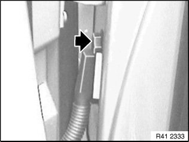
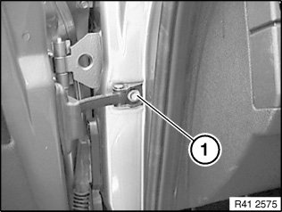
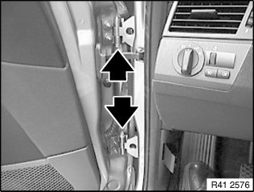
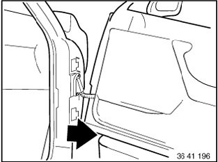
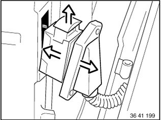
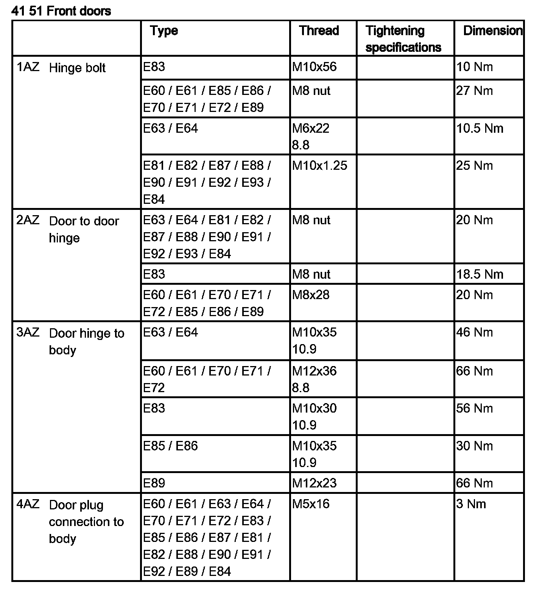
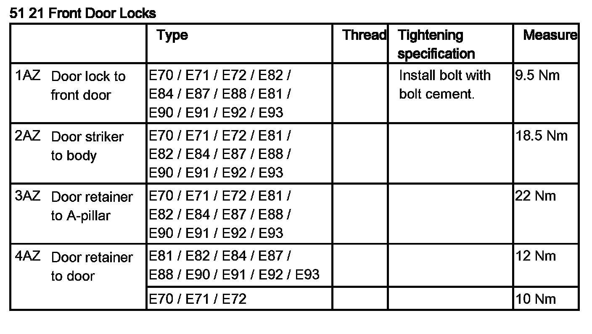

41 5. ... Removing and Installing Door
41 5. ... Removing and installing door

IMPORTANT: Do not damage adjoining body parts.
The illustrations are schematic representations and are to be applied to the relevant vehicle type.
Open door.

Release screw on connector frame.
Front door:
Tightening torque 41 51 4AZ.
Rear door:
Tightening torque 41 52 4AZ.
NOTE: Secure door against closing.

Release screw (1) on door retainer.
Front door:
Tightening torque 51 21 3AZ.
Rear door:
Tightening torque 51 22 3AZ.

IMPORTANT: Secure door against falling out.
Release screws between both hinge elements at top and bottom.
Pull both screws out of hinges.
Front door:
Tightening torque 41 51 1AZ.
Rear door:
Tightening torque 41 52 1AZ.

Pull out door sideways and place it on a suitable surface.

Pull plug connection from door pillar, unlock by pulling out bar and detach.
Installation:
If necessary, adjust door.

